품질경영산업기사 (2014-05-25 기출문제)
1과목: 실험계획법
1. Y 부품에 대하여 인자 A를 3수준으로 하여 반복 6회 실험한 결과, 다음과 같이 실험을 3번 실패한 데이터를 얻었다. 이 때 SA의 값은 약 얼마인지 구하시오.
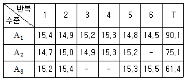
- 0.323
- 0.484
- 0.672
- 1.245
(정답률: 61%)

2. 화학공정에서 제품의 수율을 향상시킬 목적으로 반응온도 (A) 4수준, 원료 (B) 3수준으로 인자를 택하고 반복 없이 실험하여 다음의 데이터를 얻었다. μ(A4B1)의 95% 신뢰 구간을 약 얼마인지 구하시오. (단, t0.975(6)=2.447이다.)
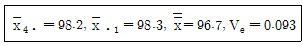
- 99.27~100.33
- 100.27~101.43
- 100.33~101.43
- 100.37~101.43
(정답률: 40%)
3. 1원배치 단순회귀 분산분석에서 수준수 ℓ=6, 반복수 m=3, 잔차변동 Sr=1.426인 경우, Vr 값은 약 얼마인가?
- 0.285
- 0.357
- 0.475
- 0.713
(정답률: 32%)
4. L8(27) 직교배열표에서 4개의 인자 A, B, C, D를 다음과 같이 배치하였을 때 A×C 교호작용은 몇 열에 배치되는지 구하시오.
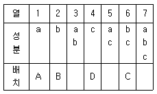
- 3열
- 4열
- 5열
- 7열
(정답률: 78%)
5. 실험계획의 일반적인 원리 중 실험에 선정된 인자 외에 기타의 원인들이 실험결과에 영향을 미치는 것을 배제하기 위하여 적용하는 원리는?
- 블록화의 원리
- 랜덤화의 원리
- 반복의 원리
- 직교화의 원리
(정답률: 24%)
6. 다음 데이터에서 인자 B의 수준간 변동(SB은 약 얼마인가?
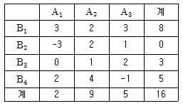
- 6.25
- 11.33
- 19.37
- 31.71
(정답률: 66%)
7. 2수준계 직교배열표에서 선점도를 이용한 배치를 설명한 것 중 틀린 것은 무엇인가?
- 선과 점은 각각 자유도 1을 갖는다.
- 점과 점은 각각 하나의 요인을, 그 점들을 연결하는 선은 그들의 교호작용 관계를 나타낸다.
- 점이나 선은 각각 하나의 열을 표시한다.
- 선점도는 주효과와 2, 3인자 교호작용과의 관계를 표시한 것을 말한다.
(정답률: 29%)
8. 다음은 반복 없는 2원배치 실험의 분산분석표의 일부이다. 인자 A의 기여율 ρA는 약 얼마인가?
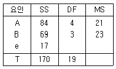
- 46.08(%)
- 52.45(%)
- 58.64(%)
- 62.44(%)
(정답률: 46%)
9. 회귀분석에서 결정계수(r2)에 대한 설명 중 틀린 것은 무엇인가?
- 총변동 중에서 잔차변동이 차지하는 비율이다.
- 모든 측정값들이 회귀선상에 위치한다면 r2=1이 된다.
- 추정된 회귀선의 기울기가 0이면 결정계수의 값은 0이 된다.
- 결정계수를 회귀선의 기여율이라고도 부른다.
(정답률: 29%)
10. 3×3 라틴방격에서 인자 B의 변동(SB) 은 약 얼마인가?
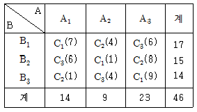
- 1.56
- 2.90
- 33.57
- 64.90
(정답률: 60%)
11. 부적합품 여부의 실험에서 적합품이면 0, 부적합품이면 1의 값을 주기로 하고 4대의 기계에서 나오는 200개씩의 제품을 만들어 부적합품 여부를 조사한 결과가 다음 표와 같을 때, 총 변동 ST는 얼마인가?
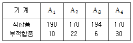
- 52.31
- 56.44
- 60.29
- 62.22
(정답률: 32%)
12. 둘 다 모수인자인 A, B의 수준조합에서 각각 반복이 2회 있는 2원배치 실험을 실시하였다. 인자 A의 자유도는 3이고 교호작용의 자유도가 12이면 오차항의 자유도는 얼마인가?
- 20
- 36
- 40
- 72
(정답률: 60%)
13. 라티니방격법에 대한 내용 중 가장 옳은 것은 무엇인가?
- 분산분석표의 F-검정에 의하여 유의한 인자에 대해서는 각 인자 수준에서 모평균을 추정하는 것은 의미가 없다.
- 2수준 조합에서 모평균의 신뢰구간을 구할 때 유효반복 수(ns)는 k2/k-1이다.
 이면 귀무가설을 기각한다.
이면 귀무가설을 기각한다.- A, B, C 중에서 두 인자만이 유의한 경우에는 두 인자의 수준조합에서 모평균을 추정하는 것이 의미가 있다.
(정답률: 44%)
14. 모수인자 A가 4 수준, 블록인자 B가 3수준인 난괴법에서 분석 결과, VA=5.8, VB=2.5, Ve=2.0일 때, 요인 B의 분산 추정치
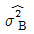
는 무엇인가?- 0.500
- 0.167
- 0.125
- 0.100
(정답률: 47%)
15. 환봉의 인장강도를 높이기 위하여 A(온도)를 4 종류로 취해 3 회씩 반복 랜덤하게 실험한 겨로가 다음의 분산분석표의 일부를 얻었다. 분산비(F0)를 구하면 약 얼마인가?
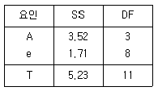
- 3.14
- 3.60
- 4.49
- 5.49
(정답률: 53%)
16. 다음은 k×k 라틴 방격법의 데이터 구조식이다. 옳지 않은 것은 무엇인가? (단, i,j,ℓ=1,2,...,k 이다.)
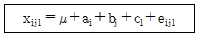
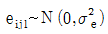
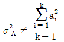
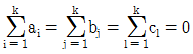
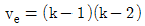
(정답률: 43%)
17. 기계에 따라 부적합품의 동일성 여부를 알아보기 위해 1원배치법 계수치 실험을 한 결과가 아래 표와 같다. 다음 중 옳지 않은 것은 무엇인가?(오류 신고가 접수된 문제입니다. 반드시 정답과 해설을 확인하시기 바랍니다.)
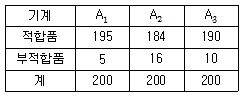
- CT=1.602
- ST=29.398
- SA=0.303
- ve=596
(정답률: 41%)
18. 반복이 없는 2원배치 실험에서 인자 A를 3수준, 인자 B를 4수준으로 하여 실험을 랜덤하게 실시한 결과 SA=24.5, SB=32.5, Se=18.0을 얻었다. 오차의 순변동은 얼마인지 구하시오.
- 24
- 27
- 33
- 36
(정답률: 27%)
19. 다음은 반복이 일정한 모수모형 1원배치 실험의 분산분석 표를 구한 것이다. 옳지 않은 것은 무엇인가?
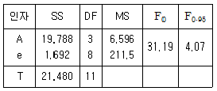
- 실험의 반복수는 3이다.
- 귀무가설은 a1=a2=a3=a4=0이다.
- 인자 A는 유의수준 5%로 유의하므로 최적해가 존재한다.
- 모수모형이므로 오차분산간의 신뢰구간 추정은 의미가 없다.
(정답률: 42%)
20. 시멘트 분쇄공정에서 시멘트 강도에 영향을 주는 인자 중 석고의 종류 A를 3수준, SO3 함량 B를 4수준으로 택하여 2회 반복실험 한 후 분산분석을 하였더니 교호작용은 유의하였다. 다음의 자료를 이용하여 A1B3의 수준조합평균을 신뢰율 95%로 추정하면 약 얼마인지 구하시오. (단,
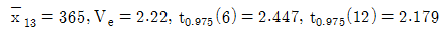
이다.)- 353.4 ~ 363.6
- 362.7 ~ 367.3
- 373.5 ~ 375.7
- 376.4 ~ 378.6
(정답률: 59%)
2과목: 통계적품질관리
21. 검사의 소요시간은 평균 30분, 표준편차 5분인 정규분포를 따른다고 한다. 검사 합격시간이 35분 이내라고 한다면, 전체의 몇 %가 합격하겠는가?
- 0.9973
- 0.9545
- 0.8413
- 0.6827
(정답률: 27%)
22. 계수치에 대한 검·추정을 실시할 때 그들 자체의 속성(attribute)이 어떤 분포에 근사하고 있는지 고르시오.
- 이항분포
- 정규분포
- 와이블부높
- 포아송분포
(정답률: 36%)
23. KS Q ISO 2859-1:2010 계수치 샘플링 검사 절차-1부 로트별 합격품질한계(AQL) 지표형 샘플링검사 방안의 엄격도 전환 규칙의 절차에서 보통검사에서 수월한검사로 전환하기 위한 전제조건이 아닌 것은 무엇인가?
- 생산이 안정될 때
- 전환스코어의 현상값이 30이상일 때
- 소관권한자가 승인할 때
- 1로트가 불합격인 경우
(정답률: 52%)
24. KS Q ISO 2859-1:2010 계수치 샘플링 절차-제1부:로트별 합격품질한계(AQL) 지표형 샘플링검사 방안에서 AQL에 대한 설명으로 옳지 않은 것은 무엇인가?
- 합격품질수준을 의미한다.
- 제출되는 로트가 연속로트인 사이에서 AQL은 샘플링 검사 목적에 만족한 프로세스의 한계품질수준이다.
- AQL은 프로세스 평균으로서 합격으로 생각되는 것과 그렇지 않은 것과의 경계값이다.
- AQL은 부적합 퍼센트로 표시한 품질수준으로 샘플링검사의 목적에 대응하여 로트의 합격확률을 낮은 값으로 억제하고 있다.
(정답률: 44%)
25. 샘플링검사의 OC곡선에 대한 설명으로 틀린 것은 무엇인가?
- 여러 품질수준에 대한 상대적 검사비용을 보여준다.
- 좋은 로트와 나쁜 로트를 구별하는 능력을 보여준다.
- 어떤 특성치의 평균값을 갖는 로트가 어떤 확률로 합격하는가를 보여준다.
- 어떤 적합품률을 갖는 로트가 어떤 확 률로 합격하는 가를 보여준다.
(정답률: 55%)
26. 상호 독립된 불편분산 VA와 VB의 분산비는 자유도 vA와 vB을 갖는 F 분포를 따르게 되는데, 자유도 vA=10과 vB=10인 F 분포의 우측확률면적을 5%로 할 때, 분기점 F0.95(10,10)는 2.98이 된다. 이 분포에서 좌축확률면적을 5%로 할 때 분기점 F값은 약 얼마인가?
- 0.122
- 0.244
- 0.336
- 0.493
(정답률: 42%)
27. 어떤 회사로부터 납품되는 화학약품의 함수율의 표준편차가 0.75% 였다. 이번에 납품된 로트의 평균치를 신뢰도 95%, 정도 0.5로 추정할 때 필요한 샘플수는? (단, u0.975=1.96, u0.995=2.58이다.)
- 5
- 7
- 9
- 11
(정답률: 40%)
28.  관리도에서
관리도에서  의 변동을
의 변동을
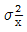
, 개개 데이터의 산포를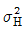
, 군간변동을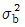
, 군내변동을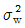
이라 할 때 이들 간의 관계식으로 틀린 것은 무엇인가?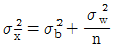
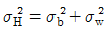
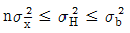
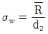
(정답률: 47%)
29. c 관리도의 중심선(CL)이 16이었다. 관리하한선(LCL)은?
- 2
- 4
- 8
- 28
(정답률: 67%)
30. 검·추정에 관련된 설명으로 틀린 것은 무엇인가? (단, α는 제 1종의 과오, β는 제 2종의 과오이다.)
- α를 크게 할수록 검출력은 작아진다.
- 모표준편차를 작게 할수록 검출력은 커진다.
- 시료의 크기가 일정하면 α를 크게 할수록 β는 작아진다.
- α를 일정하게 하고, 시료의 크기를 m게 할수록 β는 작아진다.
(정답률: 57%)
31. t분포에 대한 설명 중 옳지 않은 것은 무엇인가?
 는 F1-α(1,v)와 동일한 값을 가진다.
는 F1-α(1,v)와 동일한 값을 가진다.- 자유도가 무한대에 근사하면 t분포는 정규분포에 근사하게 된다.
- 자유도 v인 t분포의 기댓값은 0이다.
- t분포의 분산은 v/v-2이다. (단, v＞2이다.)
(정답률: 15%)
32. 상관계수 r에 대한 설명 중 틀린 것은 무엇인가?
- -1≤ r ≤ 1의 범위의 값
- x가 증가하면 y도 증가하는 경향이 있는 경우에는 r＞0이 된다.
- x와 y에 아무런 관계가 없을 때는 r=0이 된다.
- r의 값이 1 또는 -1에 가까울수록 일정한 경향선으로부터의 산포는 커진다.
(정답률: 57%)
33. 표준값이 주어져 있지 않은 경우, R관리도와 s 관리도의 설명에서 틀린 것은 무엇인가?
- R관리도의
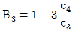
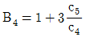
(정답률: 49%)
34. 모 부적합수에 대한 문제를 다룰 때 m≥5 이면 모 부적합수는 근사적으로 어느 분포를 따르는가?
- 이항분포
- 초기하분포
- 정규분포
- F분포
(정답률: 50%)
35. KS Q 0001:2013 계수 및 계량 규준형 1회 샘플링 검사 제3부 : 계량 규준형 1회 샘플링 검사 방식(표준편차기지)으로 어떤 전기부품의 저항값은 45Ω이하이어야 한다고 규정되어있다. 측정값이 다음과 같을 때 상한 합격 판정치(
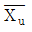
)값은? (단, n=5, k=2.11이고, 로트의 표준편차는 2Ω이다.)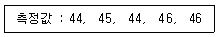
- 21.33
- 32.45
- 35.78
- 40.78
(정답률: 38%)
36. 샘플링 오차(smapling error)에 대한 설명으로 틀린 것은 무엇인가?
- 오차는 측정치의 평균과 참값의 차이다.
- 오차의 성질을 분석할 때는 신뢰성, 정밀성, 정확성으로 나누어 생각할 수 있다.
- 시료의 크기가 크면 클수록 샘플링 오차는 작아진다.
- 시료로 모집단을 추측하고자 하는데서 발생하는 오차이다.
(정답률: 46%)
37. 샘플링 검사시 검사단위의 품질표시방법으로 틀린 것은 무엇인가?
- 부적합수에 의한 표시방법
- KS 규격에 의한 표시방법
- 특성치에 의한 표시방법
- 적합품, 부적합품에 의한 표시방법
(정답률: 59%)
38. 어떤 제조공정의 평균부적합률이 5%로 예측된다. 제조공정으로부터 n=100개씩 20조를 취하여 부적합품수를 조사했더니 ∑np=68이었다. np 관리도의 UCL은 약 얼마인가?
- 0
- 2.025
- 8.837
- 10.256
(정답률: 21%)
39. 공정에 의해 분류되는 검사가 아닌 것은 무엇인가?
- 출하검사
- 출장검사
- 공정검사
- 수입검사
(정답률: 58%)
40. 3개의 동전을 던져서 앞면이 나온 횟수를 X라고 할 때 기댓값 E(X)는?
- 0.50
- 0.75
- 1.00
- 1.50
(정답률: 29%)
3과목: 생산시스템
41. MRP시스템에 있어서 MRP의 구성 요소들의 조립순서를 나타내고, 각 조립순서의 단계별로 필요한 소요량과 조달기간을 결정하는 것은 무엇인가?
- 부품명세서
- 자재명세서
- 조립명세서
- 재고기록서
(정답률: 41%)
42. 다음 지수평활계수(α)값 중 예측값의 오차에 영향을 가장 작게 미치는 값은 얼마인가?(오류 신고가 접수된 문제입니다. 반드시 정답과 해설을 확인하시기 바랍니다.)
- 0.01
- 0.3
- 0.5
- 1.0
(정답률: 25%)
43. 다음 중 즉시성과 확실성이 가장 강한 분석기법은 무엇인가?
- 메모모션스터디(memo motion study)
- 사이모차트(simo chart)
- 마이크로모션스터디(micro motion study)
- VTR(Video Tape Recorder) 분석법
(정답률: 46%)
44. 경로분석도표가 아닌 것은 무엇인가?
- 조립공정도표
- 간트도표
- 다품종공정도표
- 유입유출도표
(정답률: 56%)
45. 투빈(two-bin system)의 특징으로 옳지 않은 것은 무엇인가?
- 재고기록이 필요하다.
- Q 시스템을 시각적 시스템에 적용한 것이다.
- 수요가 균일한 저가품 재고를 관리하는 데 적합하다.
- 한쪽 용기가 비었을 때를 ROP(재주문점)에 도달한 것으로 본다.
(정답률: 44%)
46. 절차계획(Routing) 또는 순서계획(Sequencing)에서 고려되는 사항이 아닌 것은 무엇인가?
- 생산에 필요한 작업의 내용 및 방법
- 생산에 필요한 자재의 종류와 수량
- 각 작업의 실시순서
- 생산량의 수요예측
(정답률: 50%)
47. 어떤 공사의 정상 소요기간이 20일, 특급 소요기간이 12일이고, 정상 소요비용은 200000원, 특급 소요비용은 240000원일 때 16일 만에 공사를 완료한다면 이 때의 총 소요비용은 얼마인가?
- 220000원
- 230000원
- 240000원
- 250000원
(정답률: 27%)
48. 다품종 소량생산시스템의 특징이 아닌 것은 무엇인가?
- 표준화가 어렵다.
- 단속적 생산흐름이다.
- 설비는 전용설비이다.
- 중점관리 사항은 납기관리이다.
(정답률: 68%)
49. PTS법의 적용을 위한 가정과 거리가 먼 것은 무엇인가?
- 작업내용은 세분화된 기본동작으로 구성된다.
- 각 기본동작의 소요시간은 몇 가지 시간변동 요인에 의해 결정된다.
- 언제, 어디서 동작을 하든 변동요인이 다르더라도 소요시간은 기준시간치와 동일하다.
- 작업의 소요시간은 동작을 구성하고 있는 각 기본동작의 기준시간치의 합계와 동일하다.
(정답률: 54%)
50. PERT/CPM에서 비용구배의 특급소요비용은 어떠한 경향을 나타내는가?
- 일정하다.
- 하강한다.
- 상승한다.
- 하강 후 상승한다.
(정답률: 32%)
51. 간트 차트의 설명으로 틀린 것은 무엇인가?
- 사용이 간편하고 비용이 적게 든다.
- 작업의 성과를 작업장별로 파악할 수 있다.
- 계회고가 결과를 명확하게 파악할 수 있다.
- 작업활동 상호 간에 유기적인 관련성을 파악하기 쉽다.
(정답률: 30%)
52. JIT시스템에서 공급업자와의 관계개선을 조성하기 위해 필요한 조건이 아닌 것은 무엇인가?
- 비전을 공유한다.
- 신뢰관계를 지속한다.
- 장기계약 관계를 형성한다.
- 공급업자의 공장은 가급적 본사와 멀리 위치해야 한다.
(정답률: 69%)
53. 1 로트 당 정상(normal)작업시간이 450분이며, 여유율이 10%인 작업의 총 작업시간은? (단, 로트 수는 500 이다.)
- 495분
- 41250분
- 225000분
- 247500분
(정답률: 43%)
54. 자재의 수요가 발생하여 발주를 하고, 최종 공급이 완료될 때까지 소요되는 기간은?
- 재발주기간
- 오버레이팅 타임
- 공급기간
- 리드타임
(정답률: 46%)
55. 어떤 작업자의 시간연구결과 평균작업시간이 단위당 20분이 소요되었다. 여유율이 정상시간의 10%일 때 표준시간은 얼마인가? (단, 작업자의 수행도 평정계수는 80이다.)
- 11.4
- 13.6
- 15.4
- 17.6
(정답률: 35%)
56. 어떤 조립 라인 작업에 있어서 1일 생산량이 100개이다. 조업시간 8시간 중 오전과 오후의 휴식시간이 각 30분씩이고, 작업준비시간이 60분이었으며 최종공정에서 부적합품률이 5% 발생되었다. 이때의 피치타임은?
- 3.42분
- 3.70분
- 4.42분
- 4.70분
(정답률: 32%)
57. 어느 공장의 하루 설계능력은 200대, 유효능력은 160대, 실제 생산량은 140대이다. 이 공장의 이용률과 효율을 구하면?
- 70%, 85.0%
- 70%, 87.5%
- 80%, 85.0%
- 80%, 87.5%
(정답률: 48%)
58. 어느 작업장에서 처리될 4개의 작업에 대한 작업시간과 납기일이 표와 같을 때, 최단처리시간규칙을 사용하면 평균납기지연일은 얼마인가?
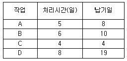
- 2.0일
- 2.5일
- 3.0일
- 3.5일
(정답률: 53%)
59. MRP시스템의 적용효과에 속하지 않는 것은 무엇인가?
- 불필요한 재고유지를 억제한다.
- 상위제품 생산계획에서 부품의 소요량을 정확하게 예측한다.
- ABC 관리방식을 채택하여 중점관리 통제에 효과가 있다.
- 능력계획과 자금소요계획에 필요한 정보를 제공할 수 있다.
(정답률: 34%)
60. 공정별 배치를 적용할 수 있는 생산시스템으로 옳은 것은 무엇인가?
- 대로트 생산시스템
- 다품종 소량생산시스템
- 연속 생산시스템
- 소품종 대량생산시스템
(정답률: 44%)
4과목: 품질경영
61. 생산자의 입장에서 표준화의 효과가 아닌 것은 무엇인가?
- 경영의 합리화
- 원부자재의 절약과 원가절감
- 제품의 다양화로 고객만족
- 품목의 단순화로 생산능률의 향상
(정답률: 54%)
62. 규격한계와 관리한계에 대한 설명 내용으로 옳지 않은 것은?
- 관리한계는 자연공차한계(natural tolerance limit)라고도 한다.
- 일반적으로 관리한계는 규격한계보다 넓게 설정될수록 좋다.
- 고유 공정한계(inherent process limit)라고도 하는 관리한계는 μ±3σ에 의해 구한다.
- 관리한계가 규격한계 내에 있으면 부적합품률을 낮게 생산할 수 있다.
(정답률: 60%)
63. 품질관리 업무를 설계품질, 조달품질, 제조품질, 사용품질, 품질개선 활동으로 분류하였을 때, 제조품질의 관리에 해당되지 않는 것은 무엇인가?
- 공정능력의 평가와 공정계획
- 품질산포와 산포원인의 발견
- 시장구매품에 대한 품질관리
- 품질표준에 대한 제조품질의 적합 정도 파악
(정답률: 37%)
64. 품질보증시스템이 추구하는 근본방향에 관한 설명으로 옳지 않은 것은 무엇인가?
- 고객이 요구하는 품질조건보다는 현 제조방법을 우선 고려하여 설계한다.
- 생산의 각 단계에 소비자의 요구가 정말로 반영되고 있는가를 체크하여 각 단계에서 조처를 취하는 것이다.
- 제품에 대한 소비자와의 하나의 약속이며 계약이다.
- 생산자가 소비자에 의해서 그 품질이 만족스럽고 적절하며, 신뢰할 수 있고 또한 경제적임을 보증하는 것이다.
(정답률: 80%)
65. 끼워맞춤의 종류에 해당하지 않는 것은?
- 억지 끼워맞춤
- 정밀 끼워맞춤
- 중간 끼워맞춤
- 헐거운 끼워맞춤
(정답률: 70%)
66. 초우량기업의 상품이 품질면에서 좋은 평가를 받고 있는 이유는 소비자가 요구하는 품질의 해석에 노력했기 때문이다. 다음 중 이러한 활동에 해당되지 않는 것은 무엇인가?
- 제품개발이나 기술분야의 선정에 있어서 “우리의 고객이 무엇을 원하고 이를 어떻게 하면 만족시킬까”라는 고객요구의 만족을 목표로 하는 개발자세가 필요하다.
- 소비자가 요구하는 품질의 해석을 위해서는 우선 참 품질특성이 어떤 것인지를 파악해야 한다.
- 대용특성을 어떻게 측정하고 시험 할 것인가, 그리고 품질수준을 얼마로 할 것인가 등을 뚜렷이 한 다음 이에 영향을 준다고 생각하는 참특성을 선정한다.
- 대용특성들을 어느 정도 나타내어 참 특성을 만족시킬 수 있는지 관계를 올바르게 파악해 두어야 한다.
(정답률: 55%)
67. 제조물 책임과 관련된 내용으로서 안전장치의 미비에 의한 제품 결함을 의미하는 것은 무엇인가?
- 설계상의 결함
- 제조상의 결함
- 경고상의 결함
- 표기상의 결함
(정답률: 45%)
68. D. A Garvin이 제시한 품질을 이루고 있는 8가지 요소에 해당되지 않는 것은 무엇인가?
- 공감성(empathy)
- 특징(feature)
- 미관성(asethetics)
- 성능(performance)
(정답률: 57%)
69. 파레토도를 그리는 방법으로 옳지 않은 것은 무엇인가?
- 분류항목 수가 많아 파레토도의 가로축이 길 경우 빈도가 작은 항목은 함께 모아 기타로 하여 우측 끝에 나타낸다.
- 데이터의 누적수를 막대그래프로 그린다.
- 파레토도의 세로축은 부적합품수, 부적합수 등을 나타낼 뿐만 아니라 손실금액을 나타내는 수도 있다.
- 부적합 빈도가 많은 항목부터 왼쪽에서 오른쪽으로 나타낸다
(정답률: 39%)
70. KS A 0001:2008 표준서의 서식 및 작성방법에서 문장 쓰는 방법에 대한 설명으로 옳은 것은 무엇인가?
- “이상”은 그 앞의 있는 수치를 포함하지 않는다.
- “및”은 병합의 의미로 사용된다.
- “때”는 선택의 의미로 사용된다.
- “또는”은 한정조건을 나타내는 데 사용한다.
(정답률: 50%)
71. KS Q ISO 9001:2009 품질경영시스템-요구사항에서 부적합의 발생방지를 위하여 잠재적 부적합의 원인을 제거하기 위한 조치는 무엇인가?
- 시정조치
- 예방조치
- 내부감사
- 경영검토
(정답률: 63%)
72. 측정오차의 정밀도(precision)를 표시하는 척도가 아닌 것은 무엇인가?
- 최빈수
- 범위
- 분산
- 표준편차
(정답률: 50%)
73. 제품인증에 관한 설명내용으로 틀린 것은 무엇인가?
- KS Q ISO 9001/2009 품질경영시스템 인증은 제품인증에 해당되지 않는다.
- 제품인증이란 제품품질을 해당규격과 비교‧시험‧평가하여 규격수준 이상으로 판명되었을 때 제품에 해당품질표시를 허용하는 제도이다.
- 한국산업규격표시 인증은 제품인증에 해당된다.
- 품질경영체제 인증기관은 한국산업규격표시 인증기관이 된다.
(정답률: 41%)
74. 브레인스토밍(Brain Storming) 활동 원칙에 해당되는 것은 무엇인가?
- 문제가 확실한 것만 의견으로 제시한다.
- “좋다, 나쁘다”라는 비판을 하지 않는다.
- 다른 사람의 아이디어가 틀리면 바로 잡는다.
- 통제된 분위기에서 주관 부서장의 주도로 체계적으로 진행한다.
(정답률: 61%)
75. 공정능력지수(Cpk)의 값으로 구하는 식으로 옳은 것은 무엇인가?
 일때 Cpk=(1-k)Cp
일때 Cpk=(1-k)Cp 일때 Cpk=(1-k)Cp
일때 Cpk=(1-k)Cp 일때 Cpk=(1-k)Cp
일때 Cpk=(1-k)Cp 일때 Cpk=(1+k)Cp
일때 Cpk=(1+k)Cp
(정답률: 40%)
76. 품질보증(QA)에 대한 설명으로 틀린 것은 무엇인가?
- 품질보증 활동은 제품 설계 단계보다는 판매 후의 중점적인 활동이다.
- 품질보증은 영어로 assure, warrant, guarantee 등의 단어가 사용된다. 각 단어의 의미는 조금씩 차이는 있지만, 목적은 모두 같은 것으로 본다.
- 품질보증은 고객의 잠재요구뿐 아니라, 제품의 안전성과 신뢰성에 대한 확신을 주는 것이다.
- 품질보증이란 소비자의 요구 품질이 충분히 갖추어져 있다는 것을 보증하기 위해 생산자가 행하는 체계적 활동이다.
(정답률: 70%)
77. 6시그마 혁신활동에서 고객(내부, 외부)의 핵심적 요구사항을 뜻하는 용어는 무엇인가?
- SD
- PPM
- QFD
- CTQ
(정답률: 50%)
78. 원인과 결과 사이의 관계, 목표와 방법 사이의 관계를 밝히고 나아가 이들 관계의 중요도를 나타내기 위해 사용되는 기법으로, 특히 품질기능전개에서 무엇과 어떻게의 관계를 나타낼 때 이용되며 문제가 되고 있는 사상 가운데서 대응되는 요소를 찾아내어 이것을 행과 열에 배치하고, 그 교점에 각 요소간의 연관유무나 관련정도를 표시함으로써 이원적 배치 가운데서 문제해결의 착상을 얻는 기법으로 가장 적당한 것은 무엇인가?
- 계통도
- PDPC법
- 친화도
- 매트릭스도
(정답률: 39%)
79. 표준을 분류하는 가장 포괄적 분류체계는 인문사회적 표준과 과학기술계표준으로 분류된다. 그 중 과학기술계표준은 통상 3가지로 분류하는데 그에 해당되지 않는 것은 무엇인가?
- 측정표준
- 잠정표준
- 성문표준
- 참조표준
(정답률: 42%)
80. A. R. Tenner는 고객이 기대하는 제품과 품질특성을 3단계 계층 구조로 나누고 있다. 다음 중 가장 높은 단계인 내면적 기쁨 즉 고객감동에 해당하는 것은 무엇인가?
- 소형 승용차의 연비가 카탈로그 상에 높게 설명되어 있다.
- 소형 승용차의 브레이크가 운전을 해보니 이상이 없었다.
- 소형 승용차 구매 후 1년 뒤 판매자가 서비스로 멋진 바디 튜닝을 해 주었다.
- 소형 승용차의 에어컨이 선택 사양이고 가격이 꽤 비쌌다.
(정답률: 74%)
A1: (0.32 + 0.28) / 2 = 0.30
A2: (0.45 + 0.41) / 2 = 0.43
A3: (0.62 + 0.58) / 2 = 0.60
전체 평균은 (0.30 + 0.43 + 0.60) / 3 = 0.44 이다.
이제 각 데이터와 전체 평균을 이용하여 SA를 구할 수 있다.
SA = √[(6/3) * ((0.30 - 0.44)^2 + (0.43 - 0.44)^2 + (0.60 - 0.44)^2)] = 0.323
따라서 정답은 "0.323"이다.
이유: SA는 인자 A의 각 수준에서의 평균값의 차이를 나타내는 지표이다. 즉, 인자 A가 부품의 품질에 미치는 영향력을 나타내는 것이다. SA가 작을수록 인자 A가 부품의 품질에 큰 영향을 미치는 것이고, 클수록 영향이 적다는 것을 의미한다. 따라서 SA가 작을수록 부품의 품질을 일정하게 유지하기 위해서는 인자 A를 조절하는 것이 중요하다는 것을 알 수 있다.